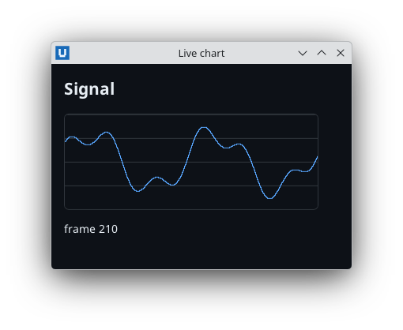

NativeHTMLKit wire protocol v1 — reference¶
Status: public-stable since Core 1.0.3. Changes within v1 are additive only
(COMPATIBILITY.md); anything else needs protocol version 2.
This page is for authors of SDKs and other independent clients. Application developers should use the Python SDK, the PowerShell SDK or the CLI; UI libraries never speak the protocol.
| You want to… | Read |
|---|---|
| Learn the protocol by building a working client | Tutorial: your first wire-v1 client and examples/wire-v1/ |
| Implement or review an SDK | SDK authoring guide |
| Look up a method, op, parameter or result member | Generated wire tables, then the schemas below |
| Understand what each document op does | Document command reference |
| Know which events arrive and what they carry | Events guide |
| Know which HTML/CSS the host renders | HTML and CSS support |
Source of truth¶
The generated contract in v1/ is authoritative; this page explains it and never overrides it.
| Artifact | What it is | Authority |
|---|---|---|
v1/method-matrix.json |
Every message: direction, kind, Rust parameter type, unknown-member policy; the 81 op names | scripts/generate-protocol-contract.py (parameter types parsed from Rust; the method list is checked against the host's dispatch arms) |
v1/schemas/methods/ |
JSON Schema (2020-12) of the params of each decoding client→host method | Generated from the serde types |
v1/schemas/document-command.schema.json |
All 81 document.command ops (oneOf, tag op) with Rust defaults (x-rust-defaults) |
Generated from DocumentCommand |
v1/conformance/golden.json |
342 runtime cases: error code, or the JSON kind of each top-level result member, boolean values and array lengths | crates/nativehtmlkit-host/tests/protocol_conformance.rs against the compiled host (Linux socket and Windows pipe) |
reference/wire-tables.md |
Readable tables of all of the above | scripts/docs/generate-wire-tables.py (generated, --checked) |
python3 scripts/generate-protocol-contract.py --check fails when the Rust types change without
regenerating the schemas, or when dispatch arms and the method list diverge. The golden does not
compare string or number values, nested contents or notification payloads beyond member names.
1. Launch and transport¶
A launcher (an SDK, the CLI or your own tool) writes an application manifest and runs:
nativehtmlkit-host run --app <app.toml> [--headless] [--allow-unsupervised]
--headless runs the whole protocol and document engine without a desktop (no native windows,
input, clipboard, dialogs, external open or accessibility; those methods return -32001).
The SDKs select it when NATIVEHTMLKIT_TEST_MODE=1. --allow-unsupervised is a Linux diagnostic
mode without systemd --user containment. Other subcommands: render --html F --output F.png
(diagnostic PNG, no backend), doctor (environment facts as JSON), probe (native probe window),
--version --verbose (embedded source identity as JSON).
Manifest (app.toml)¶
Paths are relative to the manifest's directory; {app_dir} is substituted in program, args,
cwd, env values and icon. Unknown keys are rejected; the file is at most 256 KiB of UTF-8 TOML.
[app]
id = "org.example.Notes" # dot-separated ASCII identity, components start with a letter, ≤128 bytes
name = "Notes" # ≤128 characters, used as the default window title
version = "1.2.0" # optional
icon = "{app_dir}/icon.png" # optional, must exist
[backend]
program = "/usr/bin/python3" # absolute, relative to the manifest, or a bare name looked up on PATH
args = ["app.py", "--backend"] # ≤256 arguments
cwd = "." # default: the manifest directory
[backend.env] # ≤128 entries; may not set UI4ME_*/NATIVEHTMLKIT_* transport names
PYTHONUNBUFFERED = "1"
[host] # all optional
startup_timeout_ms = 15000 # 1000..300000: hello + app.ready must happen within it
shutdown_timeout_ms = 5000 # 100..120000: the deadline_ms sent with app.shutdown
max_windows = 16 # 1..64
instance = "single" # "single" (default) forwards a second launch; "multiple"
Endpoint and launch variables¶
The host creates a private endpoint and spawns the backend (stdin closed, stdout/stderr captured)
with its own environment plus [backend.env] plus exactly these variables:
| Variable | Meaning |
|---|---|
UI4ME_ENDPOINT |
Linux: path of a Unix stream socket in a 0700 runtime directory ($XDG_RUNTIME_DIR/nativehtmlkit-host/). Windows: \\.\pipe\nativehtmlkit-host-<key>, a byte-mode pipe whose DACL grants only the current logon session, remote clients rejected |
UI4ME_TOKEN |
64 hexadecimal characters, the single-use credential for host.hello |
UI4ME_APP_ID |
The manifest app.id |
UI4ME_PROTOCOL_VERSION |
1 |
These v1 names are permanent. A client must read them, remove them from its own environment and
never log them or pass them to child processes (the host redacts the token from relayed output).
The backend's stdout/stderr lines are relayed to the host's stderr as JSON records with
fields.source = "backend" (see §10); they are never protocol traffic.
Containment¶
On Linux the host re-executes itself under a transient systemd --user unit
(KillMode=control-group) unless it is headless or --allow-unsupervised; the backend gets
PR_SET_PDEATHSIG. On Windows the backend runs in a kill-on-close Job Object. A launcher that must
not be outlived by the host should bind the host to itself (Linux PR_SET_PDEATHSIG, Windows Job
Object with kill-on-close), as the SDKs and the CLI do. On Linux, when the launcher exits, the host
begins a normal bounded shutdown; if its event loop has not started that shutdown within
max(shutdown_timeout_ms + 1 s, 2 s), a watchdog kills the backend process group and exits with
status 1. host.capabilities.containment describes the mode in use.
Host exit status¶
0 after a normal shutdown. 1 when the application failed (backend exited or lost its connection
while running, missed the startup deadline, exceeded the shutdown deadline) or was force-quit. A
second launch of a single-instance app forwards app.activate to the first one and exits 0.
2. Framing¶
Each frame is a 4-byte unsigned big-endian length followed by exactly that many bytes of one
UTF-8 JSON object. Length 0 and lengths above 2,097,152 bytes are fatal. A frame that is
not valid UTF-8 or JSON, or a truncated header or body, ends the connection without a response
(no -32700 is ever sent); for the authenticated backend this fails the application. The host never
writes a partial frame. Results and notifications that would exceed the limit are refused:
document.command returns -32002 asking for a smaller query, and an oversize document.event
is replaced by a document.error.
3. Envelope (JSON-RPC 2.0 subset)¶
Requests: {"jsonrpc":"2.0","id":<string>,"method":<string>,"params":<object>}. Notifications omit
id. Responses carry exactly one of result or error {code, message, data?}. Locked behaviour:
| Input | Outcome |
|---|---|
id not a string, empty, longer than 128 bytes or containing control characters (including id: null) |
-32600, response id: null |
jsonrpc missing or not "2.0"; an unknown top-level member; method not a string, empty, longer than 128 bytes, outside [A-Za-z0-9._-] or starting with rpc. |
-32600, id: null |
params omitted |
treated as {} |
params an array or null |
-32602, id: null |
| Unknown method | -32601 with the request id and data.method |
A batch (top-level array) or an object without method on the authenticated connection |
treated as a response to a host request; if it is not one, logged and dropped (no reply) |
A notification (no id) that fails |
no response |
| Duplicate object keys | last occurrence wins |
A request id reused while the first is pending |
fatal: the session fails |
Send unique string ids and never batches. At most 128 requests may be pending. Correlate
responses by id only: a document.load with path or asset_root is answered when its file
read finishes on a worker thread, so later requests can be answered first. Requests with inline
html and all other methods are answered in order.
4. Authentication and handshake¶
The first request on a connection must be host.hello:
{"jsonrpc":"2.0","id":"c1","method":"host.hello","params":{"token":"<UI4ME_TOKEN>","protocol_version":1}}
Other members (for example client) are ignored. Result: {protocol_version: 1, host_version,
app_id, capabilities} where capabilities equals the host.capabilities result (§7). Errors:
wrong protocol_version -32010; wrong or missing token -32011; any other method first -32011;
a second hello, or a hello with a valid token on a second connection, -32005. Only one
authenticated connection exists. Other connections may only call app.activate (the
secondary-instance hand-off) and get -32011 otherwise; a malformed frame closes only that
connection.
5. Error codes¶
| Code | Name | Typical cause |
|---|---|---|
| -32600 | invalid request | envelope violation (§3) |
| -32601 | method not found | unknown method |
| -32602 | invalid params | decode failure, unknown member on a decoding method or op, semantic argument error (unknown element id, rejected markup, out-of-range value) |
| -32603 | internal | unexpected host failure |
| -32001 | unsupported | not available here: headless clipboard/dialogs/external open/attention, hidden windows on Wayland, document features outside the profile |
| -32002 | unavailable | a service or file missing at run time; a result too large for one frame |
| -32003 | denied | policy refusal |
| -32004 | closed | window, document, node or bitmap no longer exists (stale handle) |
| -32005 | busy | a limit reached (windows, documents, pending operations, HTML over 1 MiB), duplicate hello, window creation during quit preflight |
| -32006 | cancelled | request cancelled by request.cancel |
| -32007 | disconnected | |
| -32008 | invalid state | wrong lifecycle phase: app.ready without a window or twice; any call after shutdown begins except host.capabilities, host.diagnostics, request.cancel, app.force_quit |
| -32009 | timeout | |
| -32010 | version mismatch | host.hello protocol_version ≠ 1 |
| -32011 | unauthenticated | before or without a valid host.hello |
Errors raised by the document engine carry data.engine_code. Treat every code, including
unknown ones, as failure, and never parse message.
6. Parameters and unknown members¶
Every decoding method and every op with parameters rejects unknown members with -32602.
Locked v1 exceptions: methods that do not decode params (host.capabilities, host.diagnostics,
app.ready, app.request_quit, app.force_quit, window.list, desktop.paths,
desktop.preferences, clipboard.read_text) ignore them, and so do the 11 parameterless ops
(clear_selection, copy_selection, css_profile, get_accessibility_tree, get_diagnostics,
get_environment, get_focused_element, get_pointer_capture, get_resource_stats,
get_selection, list_stylesheets). Ops whose element and node are both optional in the schema
may still require one of them at run time (focus, explain, get_computed_style,
get_control_selection, set_control_selection, replace_control_range, set_custom_validity,
get_form_data, reset_form, request_submit, edit_command without a focused control).
host.hello validates token and protocol_version by hand. In headless mode the dialog methods
return -32001 before decoding, so an unknown member there is also -32001.
7. Methods¶
Exact parameters, defaults and observed result members of every method are in the wire tables. Summary:
Host and application¶
| Method | Purpose |
|---|---|
host.hello |
Authenticate (§4). |
host.capabilities |
Capability snapshot: platform, headless, native, renderer ("cpu"), css_profile, max_windows, max_documents (16), limits {frame_bytes, pending_requests, probe_text_bytes}, legacy booleans (clipboard_text, file_dialogs, external_open, accessibility, ime, drag_drop, printing, tray, window_positioning, …) and the authoritative features map (below). Callable at any phase. |
host.diagnostics |
{phase, windows, pending_jobs, pending_transfers, pid, backend_pid, containment, logging, dropped_notifications}. Callable at any phase. |
app.ready |
The backend finished startup. Requires at least one window (-32008 otherwise or when repeated). Must happen before host.startup_timeout_ms. |
app.request_quit |
Start the quit preflight: the host asks app.before_quit {reason: "backend_request"}. Returns {requested: true}. |
app.force_quit |
End the session at once without asking; the backend is killed and the host exits with status 1. |
request.cancel {id} |
Cancel a pending asynchronous request of this connection (dialogs, external open/reveal, clipboard read, path loads). The cancelled request is answered -32006; the result is {cancelled: bool}. |
capabilities.features maps a feature name to {implemented, available, qualification, scope}.
available is whether this host, OS session and mode can use it now; qualification is
requires_current_native_evidence or out_of_scope. Feature names in 1.0.3: accessibility,
attention, clipboard_text, external_open, file_dialogs, ime, ime_purpose_hints,
incoming_drop, native_preferences, printing, reveal_file, tray, window_constraints,
window_focus, window_observation, window_position, window_restore, window_visibility.
Probe features.<name>.available instead of assuming a platform, and ignore unknown keys.
Windows¶
| Method | Purpose |
|---|---|
window.create |
Create a top-level window (title defaults to the app name, 900x560 CSS px, visible, resizable, decorations, paired min_/max_ size constraints 1..8192). Returns the window description with window_id ("w1", "w2", …, never reused). -32005 beyond max_windows or during quit preflight. On Linux (Wayland) visible: false is -32001. |
window.get / window.list |
Describe one / all windows: title, width, height (requested CSS px), visible, closing, native, scale_factor, physical_size, requested {decorations, resizable, visible, size_constraints}, observed {…} (native state, null when unknown or headless). |
window.set |
Change title, size, visibility, resizable, decorations, minimized/maximized/fullscreen, focus, position (x, y) and size constraints (null clears a constraint; update both dimensions together). What the OS honours is reported in observed. |
window.request_attention {kind?} |
Ask the window manager for attention (-32001 headless or where unavailable). |
window.request_close |
Ask to close a window: after app.ready the host sends window.event close_requested and the window.before_close decision; see §8. |
A window is first presented when its first document.load succeeds, or at most 750 ms after
creation (then a placeholder page is shown). On Windows a new window is fitted into the monitor work
area; on Wayland the compositor places windows and the surface is clamped to the smallest output.
Documents¶
| Method | Purpose |
|---|---|
document.load {window_id, html \| path, asset_root?} |
Replace the window's document. Exactly one of html (inline, ≤1 MiB UTF-8) or path (a regular file ≤1 MiB, resolved against the backend cwd); asset_root (a directory) bounds local resource loading, default: the HTML file's directory, none for inline HTML. Returns {window_id, document_id, loaded, source, asset_root, renderer, pending_resources}. Markup the profile rejects fails the load (-32602) and the previous document stays. At most 16 live documents per host. |
document.get {window_id} |
Describe the current document, or {document_id: null, loaded: false}. |
document.unload {window_id, document_id} |
Remove the document; the window shows nothing. |
document.command {window_id, document_id, command} |
Run one op on the document (§7a). |
Document ids ("d1", "d2", …) are never reused. Every command names both window and document, so a
command meant for a replaced document fails with -32004 instead of touching the new one.
7a. document.command ops¶
81 ops in nine groups; see the document command reference for semantics and the wire tables for fields.
| Group | Ops |
|---|---|
| DOM content | set_text, append_text, get_text, get_html, insert_html, replace_children_html, remove_element, move_element, trim_children, batch |
| Attributes and classes | get_attribute, get_attributes, set_attribute, remove_attribute, add_class, remove_class, has_element |
| Query and node handles | query, query_nodes, node_of, get_node, node_children, node_batch, element_at_point, text_at_point |
| Form controls and validation | get_value, set_value, get_checked, set_checked, get_options, set_selected_values, get_files, get_form_data, request_submit, reset_form, check_validity, get_validity, set_custom_validity |
| Focus, selection and editing | focus, blur, get_focused_element, get_control_selection, set_control_selection, replace_control_range, edit_command, select_text, get_selection, clear_selection, copy_selection, set_pointer_capture, get_pointer_capture |
| Dialogs and popovers | show_dialog, close_dialog, get_dialog, show_popover, hide_popover, toggle_popover, get_popover |
| Scrolling and geometry | scroll_to, scroll_by, scroll_into_view, get_scroll, set_scroll_follow, get_rect, text_rects |
| Styles, environment and behaviour | add_stylesheet, replace_stylesheet, remove_stylesheet, list_stylesheets, get_computed_style, set_environment, get_environment, set_default_action |
| Resources and diagnostics | register_resource_bundle, unregister_resource_bundle, get_resource_stats, purge_unused_resources, get_accessibility_tree, get_diagnostics, css_profile, explain |
Bitmaps (live pixels)¶
| Method | Purpose |
|---|---|
bitmap.create {window_id, document_id, bitmap_id, width, height, slots?, pixel_format?} |
Register a live bitmap (bitmap_id 1..64 of [A-Za-z0-9_-], 1..4096 px per side, 2..3 slots, only "RGBA8"). Returns {bitmap_id, width, height, stride, pixel_format, slots, slot_bytes, path, owner}. |
bitmap.present {…, bitmap_id, slot, sequence} |
The backend finished writing slot; the host copies it once. sequence must be positive and increasing; an old one is acknowledged with presented_to_engine: false. |
bitmap.close {…, bitmap_id} |
Remove it: {closed: bool}. |
Map the returned path (a private file of slots × slot_bytes bytes) before the first present and
write straight-alpha sRGB RGBA8 rows of stride bytes into a slot. Reuse a slot only after its
bitmap.present was acknowledged. The host unlinks the file after the first present. Markup shows it
as <img src="nativehtmlkit-bitmap://<bitmap_id>"> (ui4me-bitmap:// also works). Limits: 8
bitmaps and 64 MiB per document, 256 MiB per host. Files live in the private runtime directory on
Linux and in %TEMP%\nativehtmlkit-bitmaps\ on Windows; use the returned path, never a guessed one.
Worked example: examples/wire-v1/live_bitmap.py.

Real capture on KDE Plasma 6.6 Wayland with the released packages.
Desktop services¶
| Method | Purpose |
|---|---|
dialog.open_files / dialog.save_file / dialog.choose_folder |
Parented native dialogs (window_id, title, directory, file_name, filters [{name, extensions}], multiple). Answered when the user closes the dialog; cancellable. Linux needs the desktop portal. |
clipboard.read_text / clipboard.write_text {text} |
Plain-text clipboard (≤1 MiB written). read_text is answered asynchronously. |
desktop.open_external {target, window_id?} |
Open a URL or file with the default application; "accepted" is not proof that an app appeared. |
desktop.reveal_file {path, window_id?} |
Show an absolute local path in the file manager. |
desktop.paths |
Per-app config, data, cache, state, runtime directories. |
desktop.preferences |
{available, source, color_scheme, reduced_motion, high_contrast, revision, scope}; null = not observed. |
probe.get_text / probe.set_text |
Text of the built-in probe surface of a window without a document (host self-tests). |
All of these except desktop.paths, desktop.preferences and probe.* return -32001 in headless
mode.
8. Lifecycle, host requests and notifications¶
flowchart LR
Hello["host.hello"] --> Window["window.create (≥1)"] --> Load["document.load"] --> Ready["app.ready"]
Ready --> Run["events, commands, services"] --> Quit["before_quit allowed"] --> Shutdown["app.shutdown {deadline_ms}"]Host phases (host.diagnostics.phase): starting, connecting, initializing (after hello),
running (after app.ready), quit_pending, quitting, failed, stopped.
Host → client requests must be answered with {"allow": true} or {"allow": false}; a missing,
false or non-boolean allow vetoes:
| Request | When |
|---|---|
window.before_close {window_id, reason} |
the user or window.request_close asks to close a window (preceded by window.event close_requested). Allowed → the window closes (window.event closed). |
app.before_quit {reason} |
app.request_quit (reason: "backend_request") or closing the last window ("last_window"). Allowed → app.shutdown. |
Answer any other host request with an error (-32601). There is no host-side deadline for these
decisions: a backend that never answers keeps the window or app open until app.force_quit or the
user's Ctrl+Shift+Q in a document window.
Notifications (host → client): document.event, document.error, window.event,
app.shutdown {deadline_ms}, request.cancelled {id, reason} (a pending close decision superseded by
an app-wide quit), app.activated (a second launch: {args, cwd, activation_token}), and
desktop.preferences_changed (a new preferences snapshot). Payloads are described in the
events guide. Ignore unknown notifications and unknown members.
Closing before app.ready: a backend window.request_close of one window while another usable
window remains closes it without a decision; closing the last usable window, or any native close by
the user during startup, cancels startup (app.shutdown).
No closed event for the last window: when an allowed close of the last window starts shutdown,
no window.event closed is sent for it. app.shutdown means every window and document handle is
stale; later window calls fail with -32008. Release resources and exit before deadline_ms, or
the backend is killed and the host exits with status 1.
Output backpressure: a backend that stops reading is not disconnected because of input events.
When its outbound queue reaches three quarters of its bound (96 messages or 6 MiB), further
window.event and document.event notifications are dropped and counted in
host.diagnostics.dropped_notifications. Responses, host requests and all other notifications are
never dropped; a backend that leaves even those unread past the full bound fails the session. Keep
reading while you work.
9. Markup and resource names¶
ui4me-res://, ui4me-bitmap:// and data-ui4me-{drag,no-drag,resize,drop} remain valid in v1;
nativehtmlkit-res://, nativehtmlkit-bitmap:// and data-nativehtmlkit-* are additive aliases of
the same objects. Wire-visible identifiers keep their v1 values: CSS profile ui4me-desktop-1.0,
profile id ui4me-css/1, diagnostics schema ui4me-diagnostics. There is no JavaScript, no HTTP
loading and no browser engine; see HTML and CSS support.
Known limitations of v1¶
- Close/quit decisions have no host-side deadline (§8).
- A Linux host whose whole process is stopped (
SIGSTOP, a debugger) cannot bound itself; the watchdog thread does not run. A launcher that must survive this kills the host itself (its pid is inhost.diagnostics).
10. Host diagnostics output (not part of the wire contract)¶
The host writes one JSON record per line to stderr ({"timestamp","level","fields":{…},"target"}).
Backend stdout/stderr lines appear as records with fields.source = "backend", fields.stream
and fields.text at every level, launch token redacted. NATIVEHTMLKIT_DIAGNOSTICS=off|normal|debug|trace
selects the host's own detail (off keeps errors and backend output); at trace it records request
receipt and completion (method, id, duration, error code) and notification types, never params,
results or values. The sink is bounded and lossy; host.diagnostics.logging reports the drop
counters. Record shapes may gain members: parse them defensively.
Compatibility and change ownership¶
See COMPATIBILITY.md for the v1 stability rules and
CONFORMANCE-ROADMAP.md for the qualification evidence. Native capabilities
vary by OS and session; Core 1.0.3 has recorded accessibility and platform qualification limits
(for example NHK-CROSS-0010) that the stable protocol declaration does not hide.
Source: nativehtmlkit-core/protocol/README.md · edit the page there.